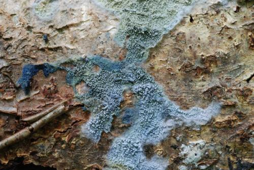
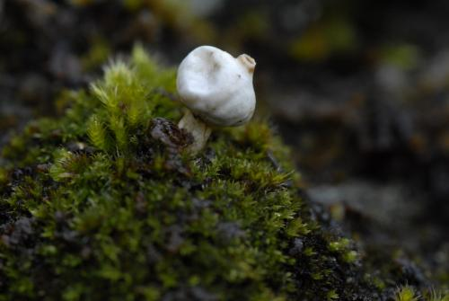
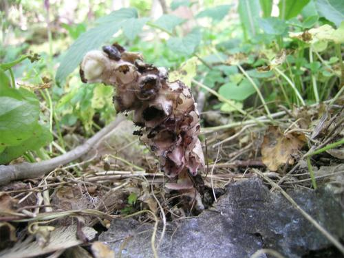

En av de mest påfallende og vakre plantene i
fjellet i innlandet om våren er mogopen Pulsatilla
vernalis, her fotografert på
Valdresflya i juni. Den står også som nær truet (NT) på
rødlista 2010.
Om våren kan man finne denne vakre soppen i
lauvskoger i låglandet. Den heter skarlagen vårbeger
Sarcoscypha austriaca. Bildet
er tatt i Eikesdalen.
Høst
Når høsten kommer i fjellet, får rypebæra
Arctous alpinus den
velkjente røde fargen som kan farge store områder.
Skarlagenvokssoppen Hygrocybe punicea er en god matsopp. I tillegg
er den en beitemarkssopp, dvs. den foretrekker gamle,
ugjødsla og upløyde beitemarker, og er vanligst i
utmarksbeiter langs kysten.
Spesielle funn i Møre og Romsdal
Torntvebladmose (Scapania nimbosa - dvs.
den som vokser i skyene) er en av Skandinavias sjeldneste
moser og bare kjent fra Eide og Fræna. Den ble først funnet
her i 1907. Ellers er den bare kjent fra Skottland og Kina.
Den er oseanisk, vokser i nordvendte fuktheiskråninger nær
kysten og har dårlig spredningsevne. I 2007-2008 ble arten
aktivt ettersøkt og i 2008 ble det funnet 11 nye lokaliteter,
men bare innenfor et begrenset område på vel en kvadratmil.
Arten står som sterkt truet (EN) på rødlista 2010.
Brun engvokssopp Hygrocybe colemanniana er en sjelden, kalkkrevende
beitemarkssopp. Den ble i 2008 funnet ved fyret på
Kvitholmen i Eide, hvor den trolig vokser på skjellsand.
Arten står som sårbar (VU) på rødlista. Øya beites av
utegangarsau, og Kvitholmens venner, som er en frivillig
forening, står for vedlikehold av bygninger og har oppsyn
med skjøtselen av kulturlandskapet.
Stavklokke Campanula cervicaria er en meget sjelden plante i Møre og
Romsdal. Den viktigste bestanden i fylket befinner seg i
veikanten ved Stranda, ved nordligste del av Eikesdalsvatnet i
Nesset. Over 100 planter ble talt i 2008 etter å ha vært
oppdaget av Bjørn Austigard på 1990-tallet. Stavklokke står
som nær truet (NT) på rødlista 2010.
Et av de mest oppsiktsvekkende funna i Møre og
Romsdal i 2008 var denne underjordiske soppen,
Elaphomyces virgatosporus, i hasselskog i Eikesdalen
under årets soppkurs i regi av foreningen "Risken", med
professor Thomas Læssøe fra København som kursleder. Den er
kjent fra Ungarn og Sveits og har nordlige utpostlokaliteter
på Öland og Gotland i Sør-Sverige. Funnet i Eikesdalen er
langt utenfor artens kjente område, og er det første funnet
av arten i Norge. Den tilhører slekta løpekuler, som i
folkemedisinen er antatt å ha effekt som potensstimulerende
middel (afrodisiakum), og blant annet gitt til husdyr i den
sammenheng. Rådyr og hjort graver opp løpekuler med klauvene
og spiser dem, trolig etter å ha luktet dem først. Ekorn
graver dem også opp og lagrer dem til vinterføde. Slekta har
dyrespredning, ved at soppen fordøyes og sporene spres med
dyrenes avføring. En av løpekulene på bildet er
gjennomskåret så den mørke sporemassen kommer til syne.
Arten står som sterkt truet (EN) på rødlista 2010. Les mer om arten
her og
her.
Granathuldrehatt (Melanophyllum
haematospermum) er en sjelden, vedboende sopp. Bildet er
tatt i Eikesdalen hvor den vokste på død ved av alm, den er
ny for Møre og Romsdal, og bare et par andre norske funn er
kjent utenfor Østlandsområdet. Den står som nær truet (NT)
på rødlista 2010.

Amaurodon viridis er en uanselig, men meget vakker blågrønn barksopp,
som her i landet bare er kjent fra Sognefjorden og
Eikesdalen. Forøvrig finnes den på det europeiske
kontinentet nord til Polen og Tyskland, men er ikke kjent
fra Danmark, Finland eller Sverige. Eikesdalen er derfor en
isolert nordlig utpost.Den vokser på død ved av bl.a. alm og gråor. Som
norsk navn er foreslått "almegrønnpigg". Den står som
sårbar (VU) på rødlista 2010.
Sinoberslørsopp Cortinarius cinnabarinus
er en vakker, sørlig edellauvskogssopp som har nordlige
utpostlokaliteter i de varmeste hasselskogene i Møre og
Romsdal. Bildet er tatt under hassel i Eikesdalen. Den står
som sårbar (VU) på rødlista 2010.
Almebroddsopp Hymenochaete ulmicola er en liten, brun barksopp som vokser på grov,
oppsprukket bark av alm, noe som helst forekommer på gamle
styvingstrær. Arten ble beskrevet så sent som i 2005, og til nå er den her
i landet hovedsakelig funnet på styvingsalm i Møre og
Romsdal. Den står som VU på rødlista 2010. Bildet er tatt i Eikesdalen hvor den er vanlig. Les
mer
her.
Spesielle funn i Hordaland
Blodstorkenebb Geranium sanguineum er en vakker, sørlig og
kalkkrevende plante, her fotografert på kalkrike strandberg
i Bømlo i juni.
Trollnype Rosa pimpinellifolia er en viltvoksende roseart med
begrenset utbredelse, her fotografert på kalkrike strandberg
i Bømlo i juni. Den står som sterkt truet (EN) på rødlista
2010.
Glassblå rødskivesopp Entoloma
caeruleopolitum er en av de mer sjeldne
beitemarkssoppene. Blant de blåstilkete rødskivesoppene i
beitemark er dette den eneste med glatt hatt (underslekt
Entoloma). Den har trolig hovedutbredelse i de oseaniske
delene av Nordvest-Europa, dvs. de britiske øyer, Danmark og
Vestlandet i Norge nord til Møre og Romsdal, og dukker opp
sent på høsten. Det er ikke kjent andre publiserte foto av
arten. Den står som sårbar (VU) på rødlista 2010. Bildet er
fra Bømlo.
Vinrød parasollsopp Lepiota fuscovinacea
(EN - sterkt truet på rødlista 2010) ble funnet i parklandskap
på marmor, på Kyrkjestølen i Mosterhamn, Bømlo. Dette er
tredje kjente lokalitet i Norge av en art som er
kalkkrevende og meget sjelden i hele Europa.
Korallkjuke Grifola frondosa er knyttet til eik, og er sjelden.
Den som er avbildet her ble funnet ved basis av en grov,
gammel eik som står mellom kjørebanene på riksvei 49 gjennom
Torvikbygd i Kvam i Hardanger. Arten står som sårbar (VU) på
rødlista 2010.
Tinnvokssopp Hygrocybe canescens er en
meget sjelden beitemarkssopp. Den står som sterkt truet (EN)
på rødlista 2010. Bildet er tatt i et eldgammelt utmarksbeite på
Møkster i havgapet vest i Austevoll kommune.
Hjortetunge Asplenium scolopendrium er en sjelden, sørlig-oseanisk
bregne som vokser i bergsprekker og skyggefulle steder i et
meget fuktig og vintermildt klima. Den står som sårbar (VU)
på rødlista 2010. Bildet er tatt i en bergsprekk i åpen beitemark
ut mot havet på Litla Kalsøy i Austevoll kommune.
Skjellporelav Sticta canariensis er en
kalkkrevende og sørlig-oseanisk lavart som bare er kjent fra
få steder på Vestlandet. Den står som sterkt truet (EN) på
rødlista 2010. Bildet er fra stein i hasselskog på Bømlo, som har
de største og viktigste bestandene i landet.
Papirhinnelav Leptogium britannicum er
en meget sjelden og kravfull art. Den vokser på
vegetasjonsfattige flekker på kalkrike strandberg noen få
steder på Sørvestlandet, i et sterkt oseanisk klima. Den
står i kategori sårbar (VU) på rødlista 2010. I likhet
med glansteppemosen Porella obtusata trues den sterkt av utbyggingsprosjekter
i strandsonen. Bildet er fra Bømlo kommune, som trolig har
de viktigste bestandene i landet.
Spesielle funn i Rogaland

Ett av årets største funn var hvit styltesopp Tulostoma
niveum på Rennesøy. Denne arten har hovedutbredelse i Sør-Sverige's
kalkområder, og den vokser som regel ovenpå et tynt lag med
moser på berg av marmor eller kalkstein. Den er også funnet
i Finland, Skottland og nylig på kalkøyene i Oslofjorden.
Funnet i Rogaland fyller ut utbredelsesluka mellom
Oslofjorden og Skottland. Den står som sterkt truet (EN) på
rødlista 2010. Les mer
her.
Klengelerkespore Ceratocapnos claviculata er en sjelden, sørlig planteart
med begrenset utbredelse. Bildet er fra bergknauser i
beitemarker nær sjøen i Finnøy kommune. Den står som sterkt
truet (EN) på rødlista 2010.
Trådbregne Pilularia globulifera er en av Norges sjeldneste planter.
Den er som navnet sier en bregne, men det er ikke så lett å
se. Den er ganske uanselig og vokser på grunt vann i
ferskvann eller på tørrlagte mudderflater. Den er bl.a.
kjennelig på de sammenrullete bladspissene. Bildet er fra
Landavatnet i Vindafjord. Arten står som sterkt truet (EN)
på rødlista 2010.
Amatørbotaniker Lars Dalen og kua i bakgrunnen
passer på trådbregna i Landavatnet i Vindafjord. Trådbregna
begunstiges trolig av kyrnes tråkk og beiting i strandsonen.
Lysmose Schistostega pennata er en noe uvanlig mose som vokser i
mørke bergsprekker. Mosens første stadium består av små
runde celler som kalles protonema, og som reflekterer lyset
på en måte som får dem til å se ut som et gulgrønt skinnende
belegg, og som har forårsaket mange myter gjennom tidene.
Bildet viser den utvokste mosen, tatt i Ølen i Vindafjord.
Bildet viser første funn i Norge av en sopp som
heter skrubbrødskivesopp Entoloma scabiosum. Funnet ble gjort i Ølen i Vindafjord i
september. Dette er trolig en sørlig edellauvskogsart, med
tre funn i Sør-Sverige og 14 i Danmark. Den står som nær
truet (NT) på rødlista 2010.

Skjellrot Lathraea squamaria er en merkelig, parasittisk plante som
helt mangler klorofyll og grønnfarge. Den vokser som regel i
edellauvskog i sørlige landsdeler, særlig under hassel hvor
den snylter på røttene. Bildet er fra Finnøy i Rogaland.
Gul buktkrinslav Hypotrachyne sinuosa
er en av Norges sjeldneste laver. Den vokser på
Sørvestlandet i oseaniske og vintermilde skoger
("regnskoger"), helst på barken av svartor. Bildet er fra en
ny lokalitet i Ølen i Vindafjord som ble funnet i 2008. Den
står som sterkt truet (EN) på rødlista 2010.
Rosa vokssopp Hygrocybe calyptriformis
er en beitemarkssopp som er funnet bare én gang i hvert av
de fire Vestlandsfylkene. Bildet er fra Kvitsøy og
representerer det første funnet i Rogaland. Arten er trolig
oseanisk og har flest funn i Storbritannia og Frankrike. Den
er funnet noen få ganger i Danmark, men aldri i Sverige. Den
står som kritisk truet (CR) på rødlista, og trues av opphørt
hevd med påfølgende gjengroing eller intensivert
jordbruksdrift.
Bustsivaks Isolepis setacea er et lite halvgras som lett
utkonkurreres av større planter. Den vokser gjerne i våte
beitemarker og fuktige kutråkk, og står som sterkt truet
(EN) på rødlista 2010. Bildet er fra Finnøy kommune.
Hårkrinslav Parmotrema crinitum er en
sterkt oseanisk lavart som forekommer på knauser ut mot
havet mellom Farsund og Stad. Den står som sterkt truet (EN)
på rødlista 2010. Bildet er fra Kvitsøy.
Glansteppemose Porella obtusata er en
meget sjelden og kravfull art. Den vokser på kalkrike
strandberg noen få steder på Sørvestlandet, i et sterkt
oseanisk klima. Den står som sterkt truet (EN) på rødlista.
Bildet er fra havneområdet ved ferjekaia på Kvitsøy. I
likhet med papirhinnelav er den veldig sårbar for
utbyggingsprosjekter i strandsonen.
Skjoldblad Hydrocotyle vulgaris forekommer i strandsumper og fuktige
beitemarker ut mot havet hovedsakelig fra Agder til Sogn og
Fjordane. Den står som nær truet (NT) på rødlista. Bildet er
fra Kvitsøy.